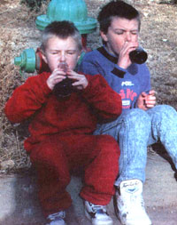

Making tradition... at home
THE SOUND OF COINS DROPPING INTO a pop machine will forever take me back to my childhood, and a summer I will never forget. My best friend and I had a daily ritual of walking over to Paul and Louis' gas station for a bottle of pop. We would drop our 15 cents into the slot and out would come the coldest, creamiest root beer we'd ever tasted. Almost every day without fail, we would sit by the air hose and drink our pop.
My best friend's parents owned the local grocery store. Little did they know, but we thought they also owned the key to our future. On a back shelf in the store, they kept root beer extract. Why not try making our own root beer at home, we thought? We'd have all the root beer we could drink, and enough left over to sell to our friends. It was the best idea of the summer; so we went to work. We would put Paul and Louis out of business, and get rich with our own root beer.
There we were in his kitchen mixing the ingredients: sugar, water, and extract. We weren't quite sure what the yeast was for, but we dropped it in anyway. Before we knew it, we were putting corks in the bottles. The instructions said to store the bottles in a cool, dry place for a week so that the carbonation process could take place. We decided to put them on a shelf in the basement, and every afternoon we would head downstairs to check our creation. We didn't see any change in the bottles, not even after we shook them. Well, it had only been a couple of days. . .
The beauty of the soda fountainwas that you could make your drink any strength and/or flavor you wished, simply by
mixing different kinds of syrup.
Sometime during the third night, it happened. The sugar, water, yeast, and extract turned our brown juice into carbonated root beer. The corks started to blow, and our root beer blew out all over the basement floor. There was just enough left in the bottom of the bottles for us to get a little taste. Much to our dismay, the homemade root beer that was going to make us rich tasted like flat, brown, yeasty soup. We switched to cola for the rest of the summer, and Paul and Louis continued to receive our 15 cents every afternoon. To be perfectly honest, it was several years before I could bring myself to try making another root beer.
Root beer has a rich history dating back as far as Colonial America. Every farm wife had her own secret recipe of herbs, roots, and spice that she would brew into root beer. The name "root beer" comes from the roots used in the recipe. Today, America has a tremendous sweet tooth; and our soda pop is much sweeter than the pop produced even 50 years ago. That's one reason why making your own soda pop can be so rewarding. You can make it to suit your own taste.
The difficult part about brewing root beer, or any flavored soda, is creating the little CO 2 bubbles that we are all so fond of. They can be chemically produced through the brewing process, which takes equipment, patience, and a fair amount of skill. There is a much easier way that produces a very high quality product-the soda fountain method.
Fifty years ago, an American drugstore would not have been complete without a row of stools and a countertop. Behind the counter sat the soda fountain, a machine which produced charged water (carbonated water). You would sit up at the counter, plop down your nickel, and order a Cherry Coke. The person behind the counter would put a squirt of Coke syrup and a squirt of cherry syrup into a glass of ice, pull the lever, fill it up with carbonated water, and you had yourself an ice cold glass of soda pop.
Today, however, there is virtually no soda pop made in this manner. The entire process of carbonation and mixing is done at your local bottling plant. Even a fastfood glass of pop is premixed and carbonated at the factory. The beauty of the soda fountain was that you could make your drink any strength and/or flavor you wished, simply by mixing different kinds of syrup.
Today, we will be making root beer using the soda-fountain method. It is easy, safe, and you can still use your creativity to make your own family recipe. The most difficult part of brewing soda pop has been taken care of for us-carbonation will be provided by soda water. You can buy it in any grocery store. (You can use soda water, club soda, or almost anything carbonated.) Mineral water and ginger ale, however, tend to add flavor to your drink, so stick with club soda to start.
Preparing root beer concentrate is surprisingly simple. It consists of a sugar base and the flavored extract. Most of us are used to the super-sweet commercially produced soda. Start with the suggested "sugar-base" recipe, and you may add additional sugar if you want your drink to be sweeter.
3 cups sugar
1 cup water
extract
6 ounces of soda water
ice
Boil sugar and water until all the sugar is dissolved. Add the extract to this base. (Note: When first starting the soda-pop hobby, it is best to buy a commercially available root-beer extract. It can be found at wine bottling shops or at larger supermarkets.)
You should feel free to experiment with your sugar and extract measurements: you are looking for the recipe that best suits your taste. Just be sure to write down your measurements so that you can repeat the mixture.
Keep this fountain syrup refrigerated and it will stay fresh for months. Then simply mix root beer syrup into soda water, and add ice.
That's all there is to it. You are now ready to give your creation a try.
Root beer got its name from the early recipe. They would actually boil up sassafras root, wintergreen leaves, molasses, and dandelion roots to make root beer. I suppose if you are adventurous, you could give it a try, but I would like to suggest a simpler method. Experiment with different flavors. Substitute fruit concentrate for the extract. Just remember to use your sugar base syrup to start.
Cut up your fresh fruit and bring it to a boil. Let it simmer. then cool. Put this mixture into a food mill, and squeeze out the juice. Add six tablespoons of your fruit concentrate to your sugar base. (You may need to add more fruit concentrate to get the flavor to come through the heavy sugar syrup.) Possible fresh fruits you may want to try are apricot, rhubarb, grape, pineapple, lemon, or cherry.
It's always fun to create something of your own. You now have a place to start. Your friends will be amazed when you bring out a glass of your own soda pop. After all, how you think Coca-Cola and Pepsi got started?
|
 |
|
|